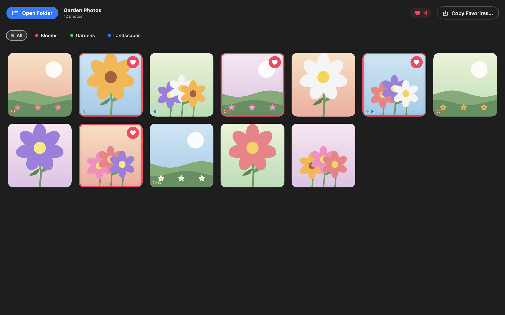
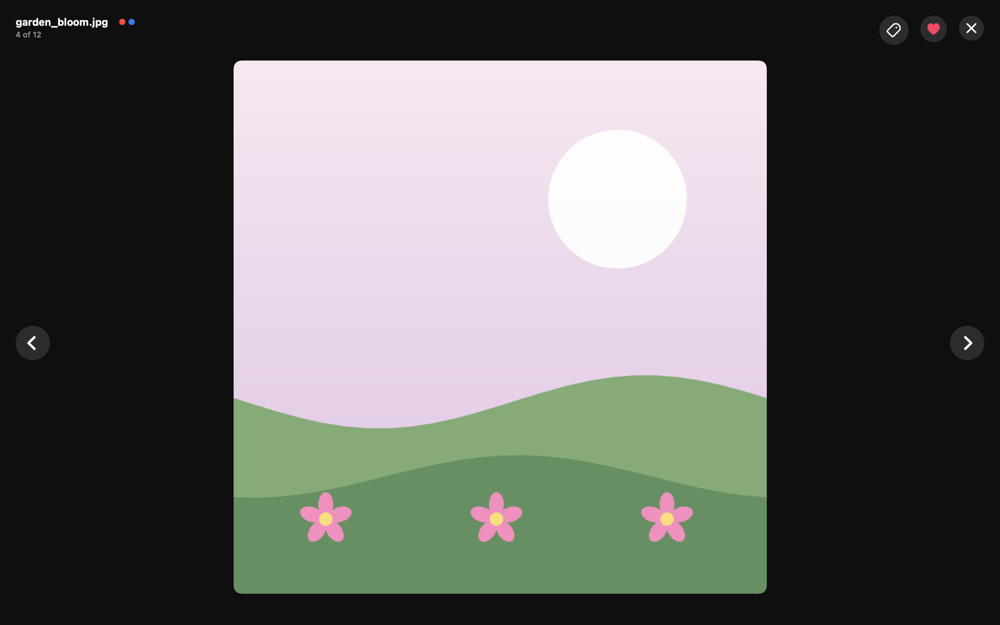

Open a folder of photos, mark your favorites with a click, and copy them straight into a new folder. Fast, native, and entirely local — nothing ever leaves your Mac.


Features
Browse JPEG, PNG, HEIC, GIF, TIFF, and more in a clean, responsive thumbnail grid.
Click the heart on any photo, or press Space in the full-screen preview, to mark it as a favorite.
Click any photo to open it large, then scroll through the whole set with the arrow keys.
Tag photos with your own colored categories and filter the grid down to just one at a time.
One click copies every favorite into a new folder — originals stay untouched, right where they are.
No account, no cloud, no analytics. FotoFav never makes a network request — everything happens on your Mac.